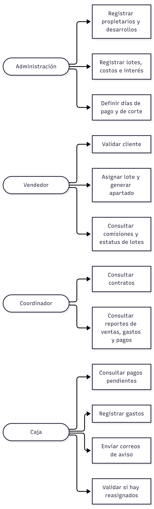
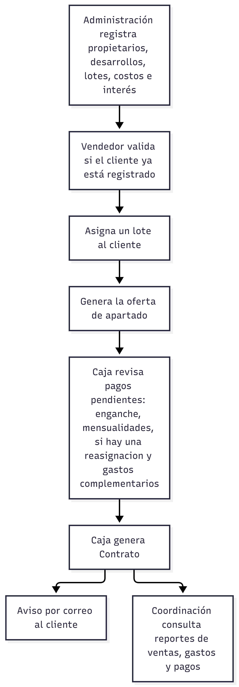
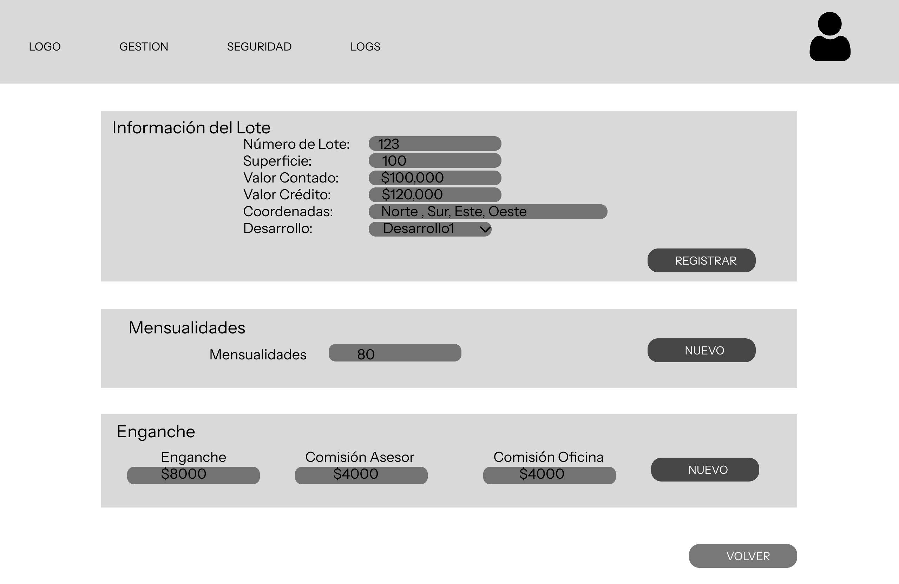
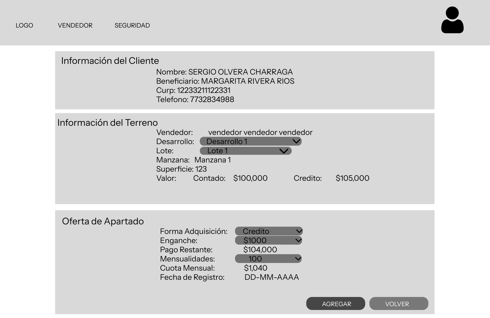
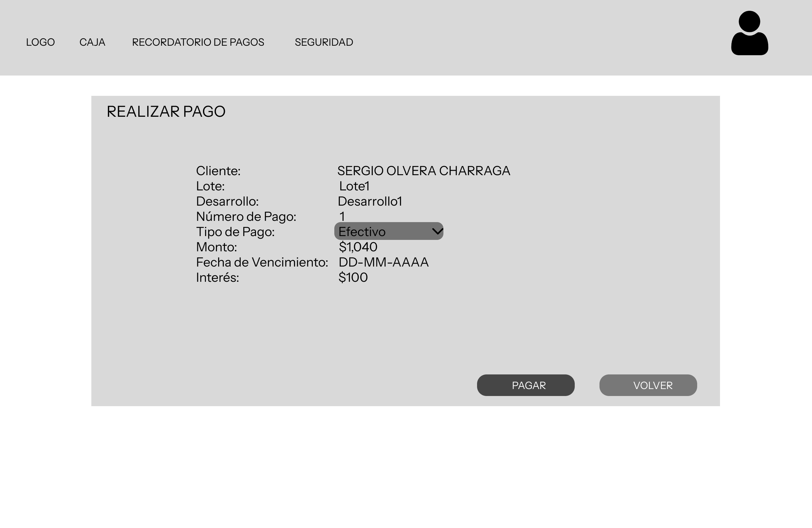
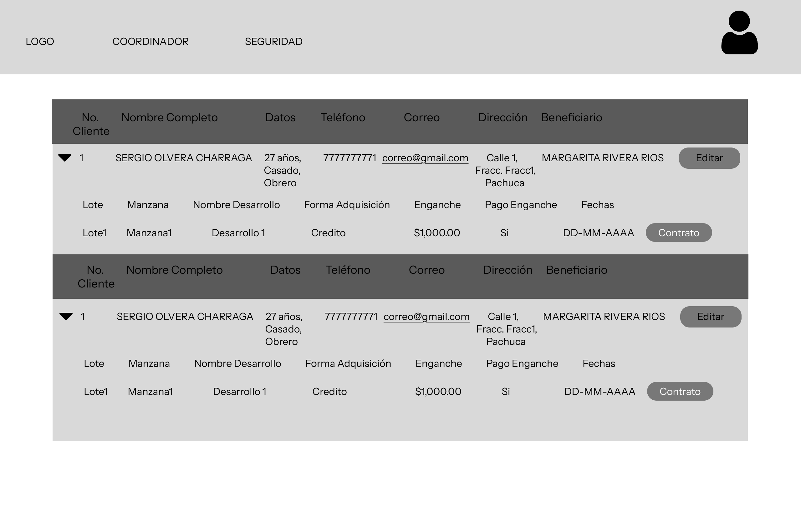
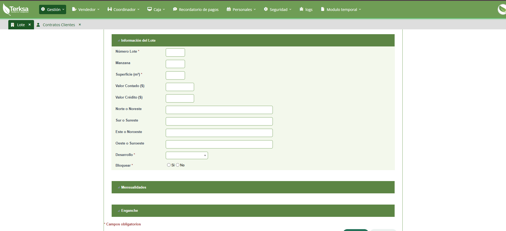
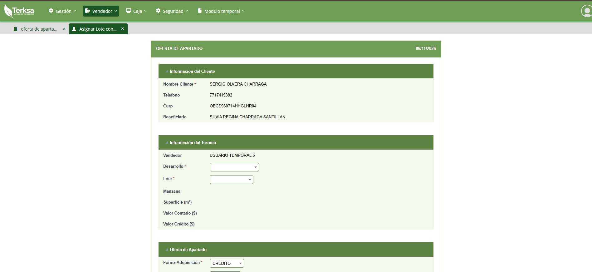
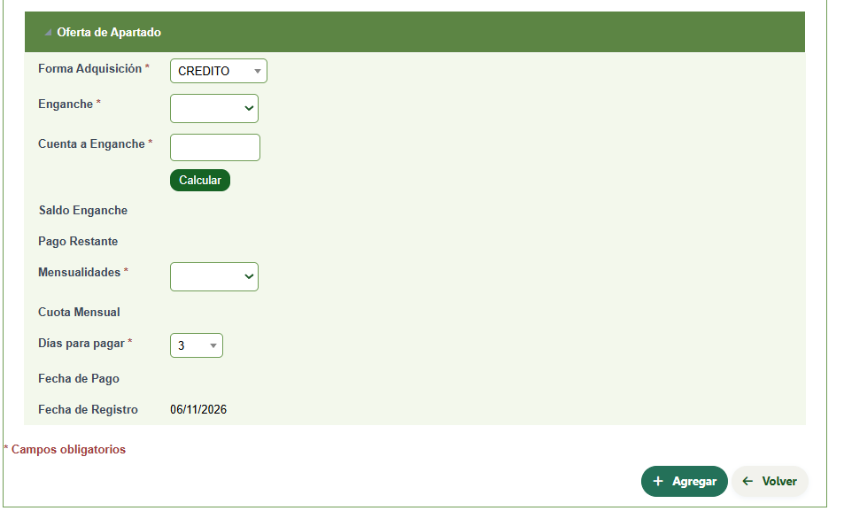
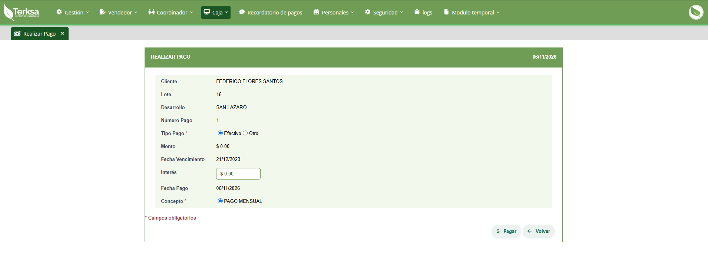

Sistema Web de Gestión Inmobiliaria (CRM TERKSA)
Una plataforma para que una inmobiliaria administre clientes, lotes, ventas y pagos en un solo lugar.
- Rol
- Desarrolladora Full Stack: análisis de procesos, diseño de interfaces y desarrollo
- Periodo
- Diciembre 2025 - Septiembre 2026
- Herramientas
- Figma, ScriptCase, PHP, MySQL, JavaScript, HTML/CSS, TCPDF
1. Contexto y problema
La inmobiliaria llevaba el control de propietarios, lotes, clientes y pagos en hojas de cálculo de Excel. Con el tiempo, esto generó problemas muy concretos:
- Era fácil perderse al buscar y reconocer la información en las distintas hojas.
- No siempre se sabía si un pago se había aplicado correctamente o si correspondía algún descuento.
- Los cuadres de caja no coincidían.
- Era difícil administrar la relación entre propietarios, lotes y clientes.
Objetivo: centralizar la operación en una plataforma web que redujera errores y tiempo en las tareas administrativas y financieras, con una vista clara para cada rol.
2. Usuarios y necesidades
| Usuario | Qué necesita hacer |
|---|---|
| Administración | Registrar propietarios, desarrollos, lotes e inmobiliaria; definir días de pago y de corte, porcentaje de interés y costos; ligar cada desarrollo a su propietario; guardar la información legal. |
| Vendedor | Validar si el cliente ya está registrado, asignarle un lote, generar la oferta de apartado, y consultar sus comisiones y el estatus de los lotes. |
| Coordinador | Consultar contratos y reportes de lotes vendidos, gastos complementarios y pagos realizados. |
| Caja | Ver la información del cliente y sus pagos pendientes (enganches, mensualidades y gastos complementarios), registrar gastos, consultar reportes y enviar correos de aviso. |

Cómo conocí sus necesidades: entrevistas, observación de su trabajo, reuniones con el cliente, ejemplos de documentación.
3. Proceso de diseño
Mapeo del proceso
Documenté el recorrido completo del negocio: registro del cliente, asignación del desarrollo y lote, apartado o venta (contado o crédito), contrato, mensualidades, pagos, intereses moratorios y recibos.

Estructura de la interfaz
Organicé el sistema en módulos (clientes, desarrollos, lotes, ventas, pagos y reportes) con permisos por rol, para que cada persona vea solo lo que necesita para su trabajo.
Wireframes




Los datos mostrados son ficticios.
Pantallas finales del sistema




Caso de uso: apartar un lote
| Actor | Vendedor |
|---|---|
| Precondición | El desarrollo y el lote ya están registrados por Administración y el lote está disponible. |
| Flujo principal |
|
| Flujo alterno | Si el cliente no está registrado, se captura su información antes de asignar el lote. |
| Postcondición | El lote queda apartado y la oferta de apartado queda generada. |
Decisiones de diseño
- Una vista por rol. Administración, vendedor, coordinador y caja ven solo lo que necesitan para su trabajo, para evitar la confusión que había en las hojas de Excel.
- Validar al cliente antes de apartar. El flujo de ventas empieza revisando si el cliente ya está registrado; después se asigna el lote y se genera la oferta de apartado.
- Cálculo automático de intereses y recargos. Lo automaticé con procesos programados para eliminar el cálculo manual y los errores de pagos y descuentos.
- Avisos por correo desde caja. El sistema envía recordatorios de pagos pendientes.
- Contratos y recibos en PDF. Los generé de forma dinámica con TCPDF para que salgan con los datos correctos de cada cliente y lote.
Validación con usuarios
Al presentar el sistema a los usuarios, muchos no esperaban que una herramienta pudiera hacer tanto. Eso me mostró que la capacitación y la comunicación forman parte del diseño: no basta con que el sistema funcione, la gente tiene que entender cómo usarlo.
4. Resultado
- Sistema en producción con módulos de propietarios, desarrollos, lotes, clientes, ventas, pagos, gastos complementarios, contratos, recibos y reportes.
- Menos errores y más rapidez al capturar información.
- Una interfaz amigable para los usuarios.
- Más compromiso con los pagos por parte de los clientes y un rastreo más preciso de la información.
5. Aprendizajes
- Entender el proceso del negocio antes de diseñar pantallas evita rehacer trabajo.
- La capacitación y la comunicación con el cliente para llegar a acuerdos son tan importantes como el sistema. La próxima vez planearía la capacitación desde el inicio.
- Probar con usuarios reales desde etapas tempranas ayuda a ajustar el sistema a lo que la gente espera.